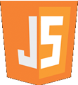
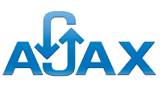

As with any web developer, I am very experienced with:
HTML5
CSS3
And to follow up on the above languages, I have extensively used these web technologies:
- 
JavaScript + jQuery
MySQL/SQLite/PostgreSQL
Ruby (Ruby on Rails)
And a special mention to my love (and ability) for graphics design!
With my current skills and knowledge of the above languages, I am confident I can create any website that my clients may require, ranging from fancy interactive static sites (like this one!), to intricate database driven web apps, to web content management systems. I am also a firm advocate of readable and efficient code and find Ruby on Rails to be the quintessential framework to use to develop web applications, with its use of well-known software engineering practices convention over configuration and don't repeat yourself.
I've also had small snippets of using the following and would love the opportunity to learn more about them:
PHP
Wordpress- 
AJAX + ASP
And as for my favorite programming languages and their respective ratings:
Java (9/10)
C (8/10)
C++ (7/10)
Some of the web-related software that I've picked up along the way:
Photoshop (9/10)
Dreamweaver (9/10)
Fireworks (10/10)
Flash (8/10)
..and many others (including using a graphics tablet)!
Lastly, I believe one of the most underrated but important skills is my willingness to learn!